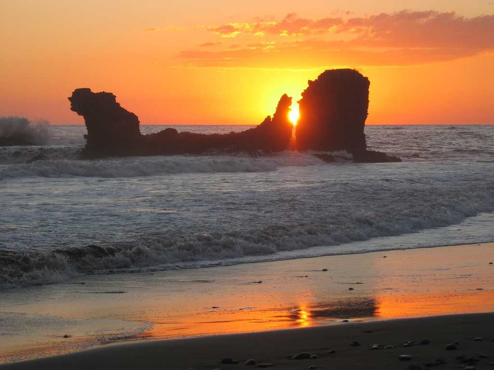
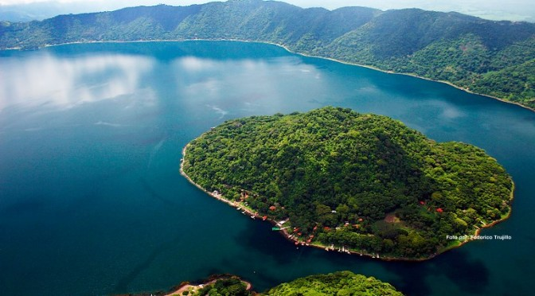
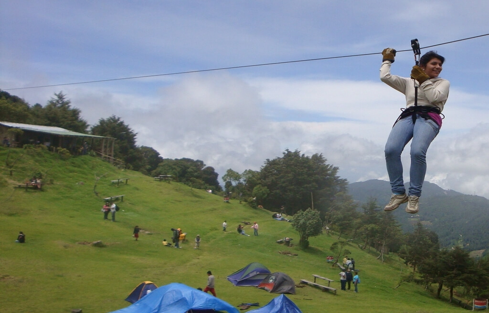
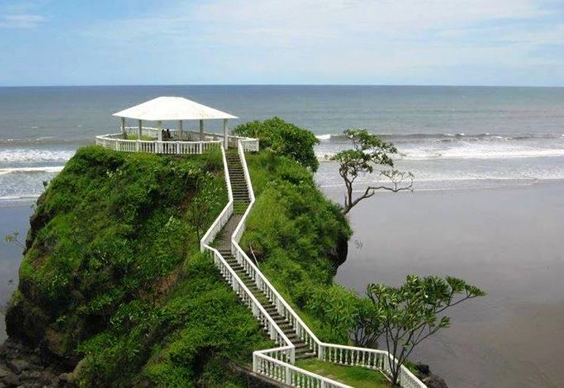

El Tunco.
La playa El Tunco (una palabra muy salvadoreña para referirse a los cerdos), es el destino más emblemático del surf en El Salvador. Su nombre se debe a una inmensa roca, semi sumergida en su playa, que en alguna época remota, sugería la forma de este simpático animal. Visitado semanalmente por cientos de turistas locales y extranjeros, el que allá por los años setentas y ochentas fue un pequeño caserío, al lado de un tranquilo estero; se ha convertido en un punto de peregrinación obligado para el surfista internacional y de quienes buscan sumergirse en la bohemia y el desenfado de la cultura surf.
Ubicado a solo 7 kilómetros al occidente del puerto de La Libertad, El Tunco es un microcosmos donde se respira un ambiente cosmopolita, abunda la diversión y la onda “chiva”, como se dice localmente para expresar algo buenísimo. El cariño, familiaridad, y espíritu de servicio de su gente, son como la cereza en el pastel. Esta comunidad surfera ofrece todo lo imaginable para un viaje espectacular.
Alojamientos modestos para mochileros, y también para quienes desean algo mucho más exclusivo y privado. Comida de todos los aromas y sabores, desde las típicas pupusas y pastelitos salvadoreños, que se cocinan y venden en plena calle, a comida casera, elaborados platillos marinos, cocina asiática, mexicana, mediterránea, pizzas, hamburguesas, y más.
Aquí se ofrecen cervezas locales y de remotos lugares del mundo, siempre bien frías. Mientras los bares y discotecas sirven todo tipo de cocteles.

Ver video
Volcan de Santa Ana
Pon a prueba tu resistencia alcanzando la cima del volcán Ilamatepec, también llamado volcán de Santa Ana. Si lográs llegar a la parte más alta tendrás de las vistas más impresionantes de la zona, al fondo observarás las aguas turquesas del magestuoso lago de Coatepeque.
Ubicado en el departamento de Santa Ana, el coloso tiene una altitud de 2,381 metros sobre el nivel del mar, siendo el volcán más alto de El Salvador, registrando sus últimas erupciones en el 2,005.
Forma parte del Complejo Los Volcanes en la cordillera de Apaneca, dentro de un bosque nuboso montañoso tropical, en una región cafetalera a unos 65 kilómetros al oeste de la capital.
Las principales actividades de la región son la agricultura y el turismo, por ello no te arrepentirás de los paisajes que verás desde que vayas en la carretera, además, de los puestos de ventas de frutos que caracterizan a la zona.
Una vez comiences a subir el volcán, la experiencia con la flora y la fauna será increíble, brindándote además un clima fresco y delicioso.
El ascenso es de nivel medio (5/10), con un clima que varía. Entre las recomendaciones de los excursionistas están: la ropa cómoda, agua, gafas de sol, bloqueador, gorra o sombrero y calzado adecuado para montañismo o senderismo.
La entrada al Complejo es $1.50 para salvadoreños, los extranjeros pagan $3.
Menores de 6 años y mayores de 60 entran gratis.
Los horarios de atención son de 8:00 a.m. a 4:00 p.m.
Ver video
Lago de Coatepeque
¿Que hay en el lago de Coatepeque?
El Lago de Coatepeque es un destino turístico nacional e internacional y sus aguas son utilizadas para pesca artesanal, recreación, riego y abastecimiento de agua a la población de los alrededores. Posee aguas muy agradables, y es sitio ideal para practicar el buceo, el velerismo, piragüismo, natación y esquí acuático.
El lago de Coatepeque, es uno de los lugares turísticos más hermosos que puedes visitar en El Salvador. Cuenta con una gran extensión en la que puedes practicar varios deportes, además de su belleza cuenta con una excelente vista panorámica hacia el volcán de santa Ana y el cerro verde.
Es un lago de origen volcánico ya que se encuentra ubicado en un cráter por lo que en ciertas partes su agua es termal. Cuenta con una isla a la cual solo se puede tener acceso mediante el ferry.
Si visitas el lago de Coatepeque hay una gran variedad de hoteles en los que puedes hospedarte los más visitados son el hotel torre molinos, rancho alegre, las palmeras entre otros.

Ver video
El pital
El cerro El Pital es una montaña transnacional, ubicada exactamente en la frontera entre El Salvador y Honduras. El Pital es la cima más alta y elevada de El Salvador y la tercera cima más alta de Honduras. Tiene una elevación de 2,730 metros sobre el nivel del mar.
¿Qué se puede hacer en El Pital?
Camping, observación de fauna y flora y caminatas por los diferentes senderos, son parte de las actividades que podrás realizar.

Ver video
Concepción de Ataco
Las aguas termales, los jardines espectaculares, los miradores y su impresionante vista al horizonte y la deliciosa gastronomía es parte de lo que puedes disfrutar en este paraíso mágico de la Zona Occidental de El Salvador.
La Zona Occidental de El Salvador es una de las joyas turísticas más importantes que El Pulgarcito de América ofrece al mundo. Cada año, son miles los turistas que se aventuran a estar en esta parte del territorio salvadoreño, dejándose hipnotizar por la belleza de estos mágicos rincones.
En este sector destacan lugares como Juayúa y Apaneca. Pero, también está el municipio de Concepción de Ataco, ubicado en el departamento de Ahuachapán y conocido popularmente como Ataco.
Su nombre, en náhuatl, significa “Lugar de elevados manantiales”, dejando en claro cual es una de sus principales características y atractivos: las caídas de agua y las regiones montañosas. Además, cuenta con uno de los climas más frescos y agradables en El Salvador.
Ver video
Playa las flores
La Playa Las Flores se caracteriza por ser un espacio recreativo amplio, con un clima cálido tropical. Su extensión es ideal para acampar y reunirse con la familia frente a las aguas del mar, sus atractivos son impresionantes. En pocas palabras, es una de las playas de El Salvador que tiene mucho para ofrecer. Este hermoso atractivo salvadoreño se encuentra a pocos kilómetros del mundialmente reconocido Puerto de la Libertad. No se debe confundir este destino con la playa Las Flores ubicada en el departamento de San Miguel.

Ver video